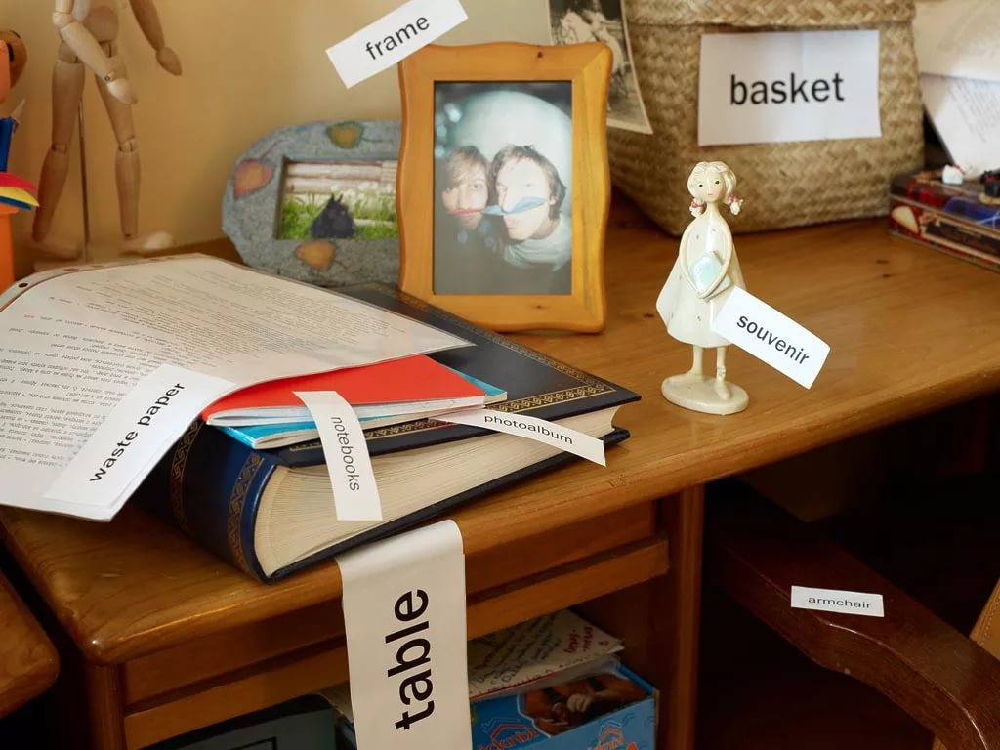

Курсы по английскому языку "Доступный английский"
|
|
Мотивация.
Задайте себе конкретную цель. Она должна быть четко сформулирована, измерима и при этом укладываться в определенный срок достижения. Например: через 3 месяца поддержать 15-минутный разговор на английском на свободную тему. Обучение в школе "Доступный английский" всегда начинается с постановки цели: если вы затрудняетесь сформулировать ее самостоятельно, с этим поможет методист на бесплатном вводном уроке. В личном кабинете вы будете видеть, как каждое выполненное задание приближает вас к поставленной цели.
Определите навыки для развития. Подумайте, что у вас развито слабее — аудирование, говорение, чтение или письмо — и сосредоточьтесь на этом. Или можно сделать акцент на том навыке, который соответствует вашим целям. Так, в случае с целью из первого пункта лучше сосредоточиться на прокачке навыков Speaking и Listening.
Соблюдайте четкий режим занятий. Например, выделите утром 30 минут для изучения лексики и грамматики, в обеденный перерыв практикуйте аудирование, после работы повторяйте материал, который освоили утром, а вечером посмотрите любимый сериал в оригинале. Кроме того, два-три часа в неделю лучше всего посвятить разговорной практике с преподавателем или носителем языка — например, на уроках и разговорных клубах в "Доступном английском".
Лексика.
- Чтобы заговорить на английском даже на начальном уровне, изучите самые популярные слова и выражения, которых будет достаточно для повседневного общения. Как правило, это те существительные, прилагательные, местоимения и глаголы, без которых не обойтись при разговоре. Придумывайте раз за разом предложения с ними и освойте нужные грамматические конструкции, чтобы грамотно их использовать. После этого вы сможете быстро заводить разговоры на самые базовые темы.
Советуем воспользоваться следующими словарями и приложениями:
Пользуйтесь стикерами.
- Еще один проверенный способ прокачать словарный запас на английском: вы клеите стикеры со словами на предметы, которые они обозначают. Легче всего это сделать дома. Например: в качестве объекта можно выбрать кухню и украсить стол стикером «table», на кухонный шкафчик наклеить «cupboard», а к посудомоечной машине прилепить «dishwasher». Ограничений почти никаких: вы сами решаете, какой теме вам нужно уделить внимание.

- Дополнительные задания